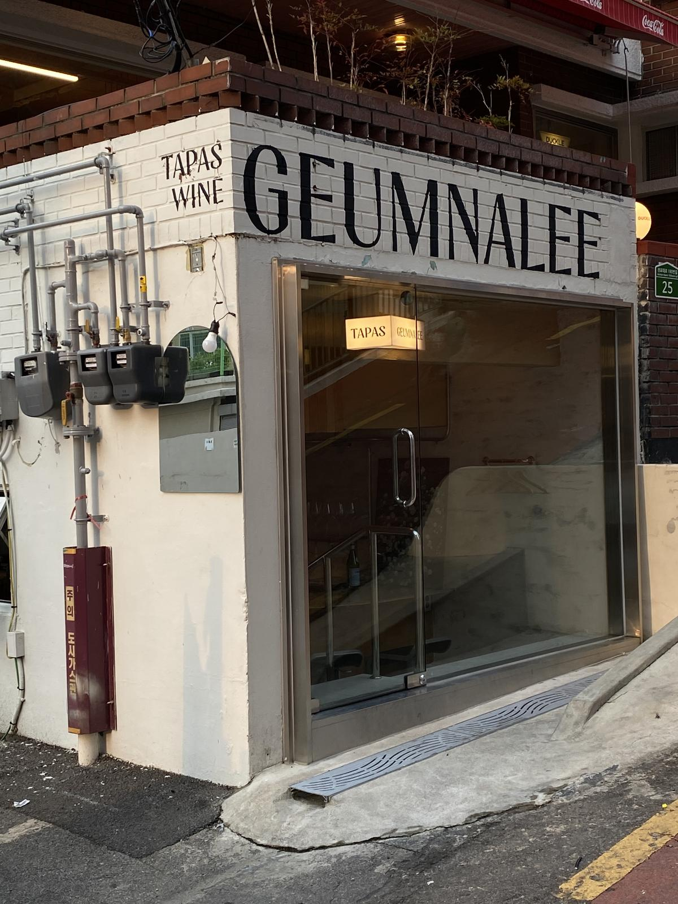

금나리 와인바에서 보는 바와 골목의 연결
안쪽에서 입구를 바라보면 긴 바 상판 너머로 골목이 보입니다. 상판 가까이에는 잔과 접시가 놓이고, 그 옆으로 오픈주방이 이어집니다. 길에서는 흰 벽의 검은 상호와 유리문 안쪽의 작은 조명이 입구를 보여줍니다.

소형 와인바, 바 좌석과 테이블은 어떻게 나눌까요?
혼자나 둘이 와서 와인 추천을 듣는 손님이 많다면 바 좌석에 메뉴판과 잔, 접시를 놓아 보세요. 여럿이 예약하는 매장이라면 붙여 쓸 테이블과 의자를 당겼을 때 직원이 지나갈 공간까지 도면에 표시합니다.
10평 안팎의 작은 매장은 좌석을 하나 더 넣을 때 입구와 화장실로 가는 길이 어떻게 달라지는지 확인하세요. 개점 전에 빈 잔과 접시를 들고 도면에 그린 경로를 따라 걸어보면, 서빙과 회수가 겹치는 곳을 찾기 쉽습니다.
와인바 조명은 손님 자리와 작업대에서 따로 봅니다
영업할 시간대에 앉아서 메뉴 글자와 와인 색이 보이는지 확인하세요. 긴 바에서는 조명이 잔과 상판에 반사되는 각도도 살펴봅니다. 직원이 병 라벨을 읽고 잔을 씻는 작업대와 마감 청소에 쓸 조명은 별도로 켤 수 있게 계획하면 운영하기 편합니다.
간판은 손님이 골목으로 들어오는 방향에서 확인하세요. 상호가 보이는 지점과 출입구를 찾는 데 필요한 표시를 정하면, 간판 제작과 외부 조명 견적도 구분할 수 있습니다.
와인셀러 위치를 잡을 때 잔 세척과 수납도 정합니다
판매할 병 수와 서빙 방식을 정한 뒤 셀러 규격, 문이 열리는 방향, 제품별 방열 공간과 전원 위치를 적습니다. 바 아래에 넣는다면 상판 높이와 장비 반입 경로도 확인하세요.
빈 잔은 싱크나 세척기로, 씻은 잔은 건조와 보관 자리로 이동합니다. 음식 조리까지 하는 매장은 잔을 치우는 경로와 뜨거운 접시를 내는 경로가 겹치는지도 살펴보세요. 기존 점포의 급배수와 환기는 장비 위치를 확정하기 전에 현장에서 확인합니다.
와인바 인테리어 비용은 어디서 달라질까요?
같은 면적이라도 기존 주방과 바를 쓸 수 있는 점포와 배관·전기를 새로 연결해야 하는 빈 상가는 견적이 다릅니다. 견적을 받으면 아래 항목에 포함 여부와 담당 업체를 표시해 보세요.
- 설계·디자인 — 좌석 배치, 바 제작 도면, 마감·조명 계획, 간판과 메뉴판의 범위
- 공사 — 철거·폐기, 바 제작, 전기·급배수·환기, 벽과 바닥 마감
- 장비·가구 — 셀러와 세척기, 테이블과 의자, 배송과 설치 비용
- 기존 시설을 남길 때 — 작동 점검, 이전·재연결, 떼어낸 자리의 보수
후보 주소와 면적, 매장 사진, 대표 메뉴와 남길 장비를 같은 자료로 전달하면 견적 차이를 확인하기 쉽습니다. 상가 인테리어 견적 비교표 →
자주 묻는 질문
대구에서 점포 계약 전에 상담할 수 있나요?
후보 주소, 사진이나 도면, 제공할 메뉴를 알려주세요. 좌석과 주방 구성을 비교하고 계약 전에 확인할 설비 조건을 정리합니다.
기존 카페를 와인바로 바꿀 때 바를 남길 수 있나요?
바 상판의 상태와 셀러·세척기 규격, 전기와 급배수 위치가 새 운영 방식에 맞는지 확인합니다. 바를 보수해 쓰는 안과 다시 제작하는 안으로 견적을 나눠 볼 수 있습니다.